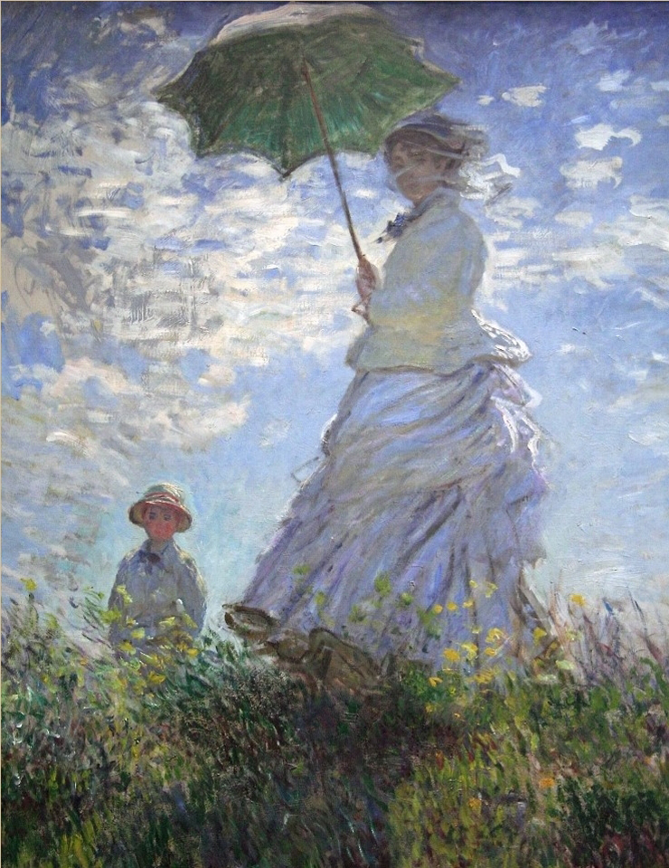

Claude Monet × Interactive webAR
빛의 선율
Melody of Light
모네의 빛 속에 잠든 악기를 깨워
나만의 오케스트라를 완성하세요
✦ 악기 수집 현황 ✦
하프
수련
플루트
양산을 쓴 여인
✦ 체험 방법 ✦
1
아래 작품 설명을 읽고 AR 체험 버튼을 누르세요
2
전시장 작품 앞에서 카메라를 갖다대세요
3
악기가 나타나면 3초간 인식시켜 수집하세요
01
Claude Monet · 1906
수련
Water Lilies
모네가 말년에 지베르니 정원의 연못을 그린 연작 중 하나. 수면 위에 반사되는 빛과 수련의 모습을 포착하여 경계 없는 물의 세계를 표현함. 구체적인 형태보다 빛과 색채의 순간적인 인상을 담아낸 인상주의의 정수.
하프
잔잔한 수면과 빛의 반사를 아르페지오의 물결로 표현
02

Claude Monet · 1875
양산을 쓴 여인
Woman with a Parasol
모네의 아내 카미유와 아들 장을 모델로 한 작품. 바람에 나부끼는 옷자락과 구름, 햇빛의 찰나를 생동감 있게 포착함. 빛과 바람이 만들어내는 순간의 아름다움을 담은 인상주의 걸작.
플루트
바람에 흩날리는 가벼운 햇살을 청명한 플루트 선율로 표현